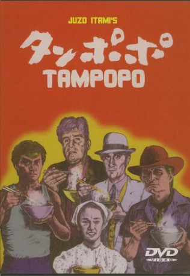

#4877 Tampopo - Magische Nudeln
Alternativ: Tampopo
 
 IMDB-Wertung: 7.9 / 10
IMDB-Wertung: 7.9 / 10  Metascore: 0
Metascore: 0 
In this humorous paean to the joys of food, the main story is about trucker Goro, who rides into town like a modern Shane to help Tampopo set up the perfect noodle soup restaurant. Woven into this main story are a number of smaller stories about the importance of food, ranging from a gangster who mixes hot sex with food, to an old woman who terrorizes a shopkeeper by compulsively squeezing his wares.
Jahr: 1985
Dauer: 114 Minuten
FSK: 16
Land: Japan Studio: Alive Vertrieb und MarketingTonspuren:
Untertitel: Deutsch,
Auflösung: 1080p (1920x1032) Größe: 5130 MB
Genre: Komödie
Regisseur: Jûzô Itami
Drehbuch: Richard Yee
Soundtrack:
Darsteller:
 Kôji Yakusho als Man in White Suit
Kôji Yakusho als Man in White Suit Ken Watanabe als Gun
Ken Watanabe als Gun Hitoshi Takagi als Chinatown, old man
Hitoshi Takagi als Chinatown, old man Tsutomu Yamazaki als Gorô
Tsutomu Yamazaki als Gorô- Nobuko Miyamoto als Tampopo
- Rikiya Yasuoka als Pisuken
- Kinzô Sakura als Shôhei
- Yoshi Katô als Noodle-making master
- Hideji Ôtaki als Rich Old Man
- Fukumi Kuroda als Man in White Suit's mistress
- Setsuko Shinoi als Old Man's mistress
- Yoriko Dôguchi als Pearl diver, Oyster girl
- Masahiko Tsugawa als Supermarket manager
- Yoshihiro Katô als Man in White Suit's henchman
- Mario Abe als Restaurant's boss
- Sen Hara als Old woman in supermarket
- Isao Hashizume als Waiter
- Narutoshi Hayashi als Accompaning man
- Hisashi Igawa als Running man
- Kensô Katô als Young employee
- Nobuo Nakamura als Old gentleman
- Mariko Okada als Supageti sensei
- Yoshihei Saga als Salary man
- Chôei Takahashi als Salary man
- Ei Takami als Tall and slender homeless
- Akio Tanaka als Salary man
- Ryûtarô Ôtomo als Ramen master
Datei: X:\HD-Eastern-Modern(N-Z)\Tampopo - Magische Nudeln (1985, FSK16, 1920x1032).mkv seit 25.11.2016
Festplatte: HD Eastern+Western
 Es gibt insgesamt 76 Filme in der Gruppe 'HD-Eastern-Modern(N-Z)'
Es gibt insgesamt 76 Filme in der Gruppe 'HD-Eastern-Modern(N-Z)'